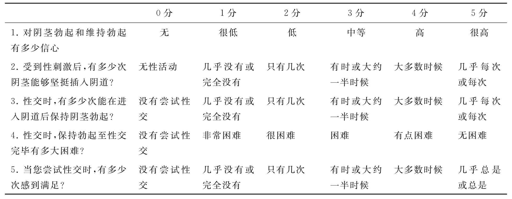

ED的诊断和治疗以患者为中心，证据为原则。需要详细采集患者的病史、合并疾病、心理状况、全面的体格检查及辅助检查，这些均有助于ED的诊断和鉴别诊断。必要时需要性伴侣配合，更好地明确病情，制订治疗方案。
病史的采集应包括详细的合并疾病，药物使用情况，性生活和精神心理状况。采集病史可以了解合并存在的疾病状况（如糖尿病）、手术治疗（如前列腺癌根治性切除术）情况及其与ED发生的可能关系，有助于鉴别器质性和心理性ED，评价治疗药物对性功能的影响以及ED治疗药物对合并疾病的影响（如治疗ED的磷酸二酯酶抑制剂对某些冠心病患者应慎用）。详细了解患者性生活的状况，有助于ED的确诊，了解ED的发病时间，持续时间，病情的严重程度，以及与合并疾病和精神心理状况之间的关系。必须明确患者除了ED之外，是否还合并有其他性功能障碍的情况（如性欲、射精和性高潮）。必要时需要患者和性伴侣一起接受评估，以便更准确全面地了解患者的性生活状况。应该仔细评价患者与性伴侣的关系。性功能障碍和社会交往、工作情况一样都会影响到患者的自信、社交能力和工作表现。
ED患者应进行全面的体格检查，重点检查泌尿生殖系统、内分泌系统、心血管系统。体格检查中有时会发现性功能障碍的明显诱因，如阴茎硬结症，性腺功能低下（睾丸体积较小，第二性征不全）。神经病变以及糖尿病的患者可能出现外周神经系统病变的体征，生殖器、会阴部感觉以及阴茎海绵体反射试验有助于评价神经性ED。
男性性功能障碍的实验室检查应包括空腹血糖、血脂以及睾酮的检测。糖尿病患者还应检测糖化血红蛋白。如果患者的睾酮水平下降，必要时可以检测泌乳素，FSH和LH。一些患者应了解甲状腺机能。50岁以上的以及有前列腺癌家族史的患者要测量前列腺特异抗原（PSA）。
有关勃起功能评价的最常用的问卷是15项的国际勃起功能指数（International Index of Erectile Dysfunction，IIEF）。IIEF评价了男性性功能的5个方面：勃起功能、性高潮状况、性欲、性交满意度，以及整体的满意度。采用IIEF评分可以将患者的勃起功能进行一定的量化，有助于了解病情的严重程度，以及治疗后病情改善的程度。从IIEF拣选出5个项目，其中4个是关于勃起功能方面的，就构成了IIEF-5（见表7-2）。根据IIEF-5的评分，ED被分为5度：严重（5～7分），中度（8～11分），中低度（12～16分），轻度（17～21分），以及没有ED（22～25分）。
根据过去6个月内的情况进行评估
表7-2 男性勃起功能问卷IIEF-5
对于病情较为复杂的患者，如阴茎畸形，盆腔或会阴外伤，ED病因不清等，在基本的病史、体格检查和实验室检查的基础之上，需要采用一些特殊的检查，了解患者的神经、血管、内分泌系统的情况以及精神心理状况，有助于了解ED的病因及制订治疗方案。
阴茎血管功能评估的目的是诊断动脉功能或静脉闭塞功能的障碍。常用的检查包括：海绵体内注射与刺激的结合试验，多普勒超声，阴茎海绵体灌注动力和造影检查，选择性阴茎血管造影。
海绵体内注射与刺激的结合试验是最常用的ED诊断试验，该实验采用血管扩张剂注射入海绵体内，并对生殖器或视听进行性刺激，然后对患者的阴茎勃起状况进行评估。在进行试验之前，应详细告知患者进行该检查的目的、意义及风险。该实验可以对阴茎血管的功能进行直接而客观的评估。常用的血管扩张剂有前列腺素E1、联用罂粟碱和苯妥拉明。如果试验发现阴茎勃起的硬度较好，且持续时间超过10分钟，则认为阴茎的静脉功能是正常的。但由于动脉功能在轻度受损时，阴茎也会出现上述勃起反应，因而检查结果不能除外动脉功能的异常。
多普勒超声检查是评估ED血管病变最可靠、损伤最小的方法。它包括海绵体内注射血管活性药物和彩色多普勒血管超声检查。多普勒超声采用的是高频（7—10MHz）彩色脉冲探头，可以进行实时超声显像，观察阴茎背动脉以及阴茎海绵体动脉，进行血流动力学观察。性刺激后，多普勒超声观察到的动脉的正常反应是阴茎根部动脉血流的峰值＞30cm/s。超声检查还可以发现阴茎的病变，如阴茎硬结症，钙化，增厚的血管壁，海绵体纤维化。当多普勒超声发现流速较高的收缩期血流（峰值＞30cm/s）和持续存在的舒张末期血流（＞5cm/s）伴有自慰后阴茎快速疲软时，则考虑存在静脉性ED。用于诊断静脉漏的指标有：舒张期静脉血流流速＞5cm/s和（或）阻力指数＜0.75。
阴茎海绵体灌注动力检查包括海绵体内注射血管活性药物（罂粟碱＋酚妥拉明＋前列腺素E1），随后采用生理盐水进行灌注，测量海绵体内的压力以评价阴茎静脉的功能。当静脉功能正常，海绵体内的压力为100mmHg时，海绵体的灌注流速＜10mL/min，而且灌注的流速下降后，海绵体内的压力应在30s时＜50mmHg。静脉闭塞功能不全的表现为盐水注入时海绵体内压力不能升高至平均收缩期血压水平，或停止注射后海绵体内压力迅速下降。
海绵体造影检查可用于发现静脉漏的部位。血管舒张剂诱导勃起后，向阴茎海绵体内注射造影剂，从而显示静脉泄漏的部位。若静脉闭合功能正常，则很少或没有造影剂出现在海绵体之外，如患者因先天性或创伤性因素导致静脉漏，则可以在造影时发现病变部位存在造影剂外漏。常见的静脉漏的部位是龟头、球海绵体、阴茎背部表浅静脉和海绵体及阴茎脚部静脉，大部分患者可以看到不止一处泄漏。
动脉血管造影检查通过向海绵体内注射一种血管扩张剂后在阴部内动脉选择性X线造影检查，观察海绵体动脉，髂血管、阴茎背血管及腹壁下血管的解剖结构和影像学表现。血管造影检查主要用于对复杂的ED患者的评估，最好的指征就是继发于创伤性动脉断裂的年轻的ED患者或有会阴挤压伤的患者。在这些患者中，血管造影检查对于计划外科重建手术是必不可少的。
海绵体动脉闭合压是一个反映阴茎血压变化的参数，其具体测量方法是在海绵体内注入血管活性药物后，向海绵体内持续灌注生理盐水，使海绵体内的压力超过动脉收缩压，采用多普勒超声探头检测阴茎根部的动脉血流，停止生理盐水的灌注，海绵体内的压力开始下降，当压力降至超声刚好能够发现海绵体动脉血流时，这时的压力称为海绵体动脉闭合压。若海绵体和分支动脉压力之间的梯度大于35mmHg，并且右侧和左侧海绵体动脉之间压力相等，则被定义为正常。该结果与动脉血管造影检查和多普勒超声血管检查的一致性较好。
生理学上，勃起有三种类型：夜间性、心因性和反射性。神经系统检查用于评价外周、脊髓、脊髓上中枢，还有与勃起类型和性唤起相联系的体神经及自主神经通路。然而，在阴茎勃起中的神经功能异常是一种复杂的现象，而且除了一些特殊情况，神经学检查很少会改变治疗方案。神经学检查主要用于研究或法医鉴定（如创伤和手术并发症），也用于发现可逆的神经病变（如骑长途自行车导致的阴茎背神经的病变），评价糖尿病或盆腔损伤导致的神经病变损伤的范围，决定是否需要神经科的专科处理（如可疑脊髓肿瘤）。但神经学检查对常规临床诊断仍缺乏足够的敏感性和特异性。
体神经通过测试神经传导速度和诱发电位来评价，这些测试的重复性和有效性较高。自主神经系统检查的可靠性较低是因为它需要同时测量受体、小纤维和靶器官的一连串事件或反应。中枢和外周的交感和副交感神经系统中的复杂的相互反应使得自主神经系统的检查变得困难。目前，自主神经系统的检查尚缺乏标准，并且其重复性、有效性和可比性较差。
这是简单检查阴茎背神经传入通路的方法。采用特定频率而振幅可调的电磁振动装置，刺激阴茎体两侧和阴茎头表面，测定患者对特定频率、不同振幅的知觉敏感阈值。
该检查能客观反映骶髓、马尾神经和阴部神经的功能完整性。这项测试通过环绕阴茎放置两个环形电极来进行，一个位于冠状沟，另一个位于距冠状沟3cm处。同心的针状电极被放置在球海绵体肌左右侧记录，通过直流电刺激发送方波脉冲。每个刺激反应的潜伏期是从开始刺激时到开始反应的时间。一个异常潜伏期的定义为：长于平均值（30～40毫秒）三个标准差以上。表示有较高的神经病理学改变的可能性。
温度阈值测试通过检测细小感觉神经纤维的电导系数，间接反映自主神经功能状况。阴茎温度感觉测试与勃起功能的相关性较强，是一种诊断神经源性ED的新型工具。
80%的夜间阴茎勃起发生在快速动眼睡眠期，他可以发生于几乎所有年龄的男性，并且不受精神因素的影响。平均的夜间勃起次数为3～5次，持续时间平均30～60分钟。随着年龄的增长，夜间勃起的总时间也相应减少。夜间阴茎勃起可以通过很多方法检测：邮票试验；测量箍带；睡眠实验室夜间阴茎勃起和硬度测定（NPTR）等。目前较为常用的是Rigiscan NPTR，该装置便于携带，可用于门诊患者。它可以记录勃起事件次数、勃起度（由张力量表测量周径变化）、阴茎硬度和夜间勃起持续时间。NPTR正常标准为：每晚4～5次勃起事件；平均持续时间超过30分钟；阴茎周径增加在根部超过3cm，末端超过2cm；最大硬度在阴茎根部和末端均超过70%。夜间阴茎勃起测试的优点主要是它相对脱离了心理影响，可用于鉴别心理性ED和器质性ED。另外联合睡眠监测的仪器，还能发现与睡眠相关的异常。Heaton等提出NPTR的指征如下：①可疑睡眠失调；②ED原因不明；③对治疗无反应；④计划行外科治疗；⑤合法的敏感病例；⑥在安慰剂对照的药物试验中测定药物的影响；⑦可疑有精神性病因。
心因性ED的现代定义是持久地不能达到或保持满意的勃起以成功地进行性行为，主要或仅仅因为精神性的或伴侣间关系的因素造成。心理性ED可以分为广泛性的和特定条件下的；终生的（原发的）和获得性的（继发的，包括物质滥用或精神疾病）。由于精神因素，以及性功能正常或不正常的性伴侣之间的关系衡量是较为复杂的，因此，在诊断时与患者的沟通需要较高的技巧，并且以此为精神心理评价的主要方式。心理性ED的病史采集包括ED发生的时间，选择性ED的情况（如对某一性伴侣时，勃起功能正常，而对另一性伴侣时，勃起功能较差，或者在手淫或性幻想时勃起功能正常，而在性交时却出现勃起功能障碍），需要了解患者是否在夜间睡眠时阴茎勃起功能正常，而在清醒时出现功能障碍。通常心理性ED的患者可能伴随焦虑、恐惧、负罪感、精神紧张，或可能导致ED的宗教信仰或父母亲传输的信念。如果患者的病史提示存在心理性及器质性因素，应诊断为混合性ED，治疗时两方面都需要关注。
大部分ED患者没有必要进行心理评估，但其对评价和治疗有深层心理问题的患者非常有用。目前常用的可被用于评价ED的心理测量工具有三组：（1）人格问卷；（2）抑郁量表；（3）性功能障碍和人际关系因素问卷。明尼苏达多项人格量表（MMPI）-2是评定患者人格和相关性功能障碍的有利工具。贝克抑郁量表是自评测试，当得分超过18则提示为有临床意义的抑郁。简易的婚姻调节测试（用于已婚夫妻）即双值的调节量表（用于未婚者）可被用于确定整体人际关系质量。